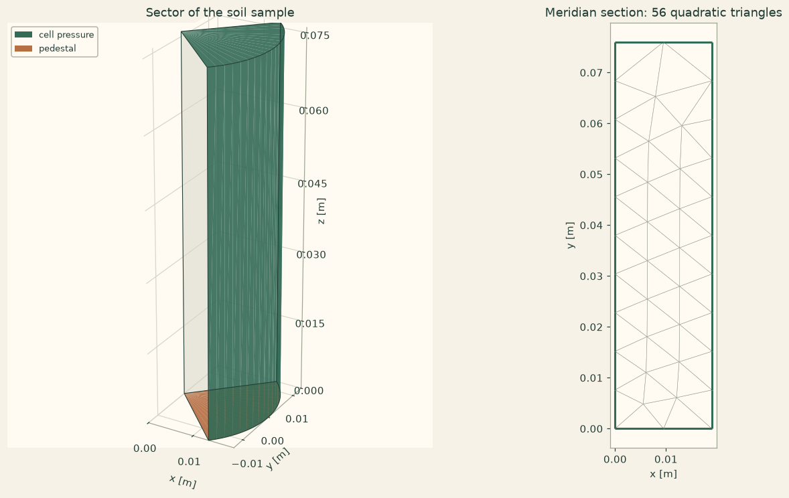

Docs › Examples › Isotropic compression of clay with Modified Cam-Clay
Soil plasticity · 2D-axisymmetric
Isotropic compression of clay with Modified Cam-Clay
A lightly overconsolidated clay sample is compressed isotropically, unloaded and reloaded, and its void ratio follows the normal compression and swelling lines.

What it computes
OneSimulation reads a sector of the cylindrical sample from a STEP file, cuts its meridian section and solves axisymmetric small-strain equilibrium with the Modified Cam-Clay model, with pressure-dependent elasticity and an implicit return at every quadrature point, along a loading, unloading and reloading path of the cell pressure. The script that builds the STEP file comes with the notebook.
What it checks
The void ratio follows the closed-form compression lines within 2e-12; the computed slopes are exactly λ = 0.25 beyond the preconsolidation pressure and κ = 0.05 on unloading and reloading, and the preconsolidation pressure tracks the largest past pressure (400 kPa, then 800 kPa).
Geometry
The notebook starts at the import of the CAD file isotropic_compression_cam_clay.step: STEP (AP242), readable by any CAD program, with the names of the faces that the boundary conditions use. Put it next to the notebook.

The geometry script
The script isotropic_compression_cam_clay_geometry.py builds the geometry with the CAD objects of OneSimulation and writes the file. Change a dimension there, run it, and run the notebook again.
"""Geometry of the OneSimulation example "Isotropic compression of clay with Modified Cam-Clay".
Builds a 90-degree sector of a cylindrical soil sample (38 mm diameter, 76 mm high, axis along z)
with the CAD objects of OneSimulation, centred on the x axis, and writes
isotropic_compression_cam_clay.step. The example computes on its meridian section y = 0. The faces
are named mantle, bottom (z = 0) and top (z = 76 mm).
"""
import numpy as np
from onesim.cad.d3 import Cylinder
sample = Cylinder(radius=0.019, length=0.076)
sector = sample.sector(
np.pi / 2, axis=(0.0, 0.0, 1.0), start=(np.cos(-np.pi / 4), np.sin(-np.pi / 4), 0.0)
)
sector = sector.grouped(
mantle=sector.select(faces=lambda face: face.kind == "cylinder"),
bottom=sector.select(
faces=lambda face: abs(face.center[2]) < 1e-9 and face.kind == "plane"
),
top=sector.select(
faces=lambda face: abs(face.center[2] - 0.076) < 1e-9 and face.kind == "plane"
),
)
sector.save("isotropic_compression_cam_clay.step")The notebook
The complete notebook, cell by cell. Run it to produce the figures and the comparison printout.
Clay compresses along two straight lines in a plot of void ratio \(e\) against \(\ln p'\), the logarithm of the mean effective stress: the steep normal compression line when the clay is loaded beyond any stress it has felt before, and the flatter swelling line when it is unloaded or reloaded below that stress. The largest past stress, the preconsolidation pressure \(p_c\), separates the two. The Modified Cam-Clay model of Roscoe and Burland (1968) builds on exactly this behaviour:
where plastic volume change moves the preconsolidation pressure along the normal compression line, and the elastic shear modulus follows from the current bulk modulus \(K=(1+e_0)p'/\kappa\) and a constant Poisson ratio.
Setup. A cylindrical sample of 38 mm diameter and 76 mm height with \(\lambda=0.25\), \(\kappa=0.05\), \(M=1.0\), \(\nu=0.3\) and initial void ratio \(e_0=1.2\). It starts at \(p'_0=100\) kPa with a preconsolidation pressure of 150 kPa (overconsolidation ratio 1.5). The cell pressure rises to 400 kPa, falls back to 100 kPa and rises again to 800 kPa. The sample comes from the CAD file isotropic_compression_cam_clay.step, written by isotropic_compression_cam_clay_geometry.py with the CAD objects of OneSimulation; the computation uses its meridian section.
| edge of the section | condition | |---|---| | mantle | cell pressure \(\sigma_c(t)\) | | top | cell pressure \(\sigma_c(t)\) | | bottom | axial displacement 0 | | axis | symmetry |
Reference. Under isotropic stress the sample deforms uniformly. Starting from \(e_0\) the void ratio follows the swelling line up to \(p_c\), then the normal compression line; unloading and reloading below the largest past pressure return along a swelling line, and loading beyond it continues the normal compression line (Wood, Soil Behaviour and Critical State Soil Mechanics, Cambridge 1990, Ch. 4):
import numpy as np
from onesim.cad.exchange import load
from onesim.materials.solids import ModifiedCamClay
from onesim.meshing import TriangularMesher
from onesim.numerics.linear import SparseDirect
from onesim.numerics.nonlinear import DampedNewton
from onesim.physics.solid_mechanics import SmallStrainSolid
from onesim.visualization import plots, theme
theme.set()Geometry and mesh
load returns the sector of the sample with its named faces; section cuts the meridian plane, whose \(x\) coordinate is the radius. Quadratic triangles of 8 mm.
sample = load("isotropic_compression_cam_clay.step")
faces = sample.boundaries
meridian = sample.section((0, 1, 0), origin=(0, 0, 0))
edges = meridian.boundaries
mesh = TriangularMesher(target_size=0.008).generate(meridian)
fig = plots.figure(1, 2, size=(12, 6.5))
plots.geometry(
sample,
selection={"cell pressure": faces.mantle | faces.top, "pedestal": faces.bottom},
labels=False,
camera=plots.Camera(elevation=25, azimuth=-60),
title="Sector of the soil sample",
ax=fig[0],
)
plots.mesh(
mesh,
groups=("all",),
legend=False,
title=f"Meridian section: {mesh.cell_count} quadratic triangles",
ax=fig[1],
)
plots.show()Model
SmallStrainSolid with axisymmetric kinematics carries a ModifiedCamClay material point; the stresses are effective stresses (drained test). The material starts from its initial effective stress, so the first load step applies the same 100 kPa as boundary pressure. The cell pressure path is followed in 41 steps.
compression, swelling, initial_void, start, cap = 0.25, 0.05, 1.2, 100e3, 150e3
clay = ModifiedCamClay(
compression_index=compression,
swelling_index=swelling,
critical_slope=1.0,
poisson_ratio=0.3,
initial_void_ratio=initial_void,
preconsolidation_pressure=cap,
initial_pressure=start,
)
cell = np.r_[
np.geomspace(100e3, 400e3, 15),
np.geomspace(400e3, 100e3, 11)[1:],
np.geomspace(100e3, 800e3, 16)[1:],
]
pressure_at = lambda x, y, t: cell[int(round(t))]
result = SmallStrainSolid(
youngs_modulus=1.0,
poisson_ratio=0.3,
kinematics="axisymmetric",
material_point=clay,
).solve(
mesh=mesh,
times=np.arange(len(cell), dtype=float),
order=2,
displacements=((edges.bottom, "z", 0.0),),
tractions=(
(edges.mantle, lambda x, y, t: (-pressure_at(x, y, t), 0.0)),
(edges.top, lambda x, y, t: (0.0, -pressure_at(x, y, t))),
),
nonlinear=DampedNewton(
linear_solver=SparseDirect(),
relative_tolerance=1e-10,
absolute_tolerance=1e-8,
maximum_iterations=40,
),
)
states = [step[0][0] for step in result.material_history]
mean = np.array([state.mean_pressure for state in states])
void = initial_void - (1 + initial_void) * np.array(
[-sum(state.strain[:3]) for state in states]
)
spread = max(
np.ptp([point.mean_pressure for cell_points in step for point in cell_points])
for step in result.material_history
)Comparison with the compression lines
The void ratio at every step against the closed form, the preconsolidation pressure carried by the material, and the slopes of the computed curve on the three branches.
reference = (
lambda p, largest: initial_void
- swelling * np.log(p / start)
- (compression - swelling) * np.log(np.maximum(cap, largest) / cap)
)
largest = np.maximum.accumulate(cell)
slope = lambda i, j: -(void[j] - void[i]) / np.log(mean[j] / mean[i])
print(
f"mean effective stress follows the cell pressure within {np.abs(mean / cell - 1).max():.1e}; spread over the sample {spread:.1e} Pa"
)
print(
f"largest deviation of the void ratio from the compression lines: {np.abs(void - reference(cell, largest)).max():.1e}"
)
print(
f"preconsolidation pressure after loading to 400 kPa: {states[14].preconsolidation_pressure / 1e3:.2f} kPa, after unloading "
f"{states[24].preconsolidation_pressure / 1e3:.2f} kPa, at the end {states[-1].preconsolidation_pressure / 1e3:.2f} kPa (largest cell pressure 800 kPa)"
)
print(
f"slopes of e over ln p': first loading above p_c {slope(10, 14):.4f} (λ = {compression}), unloading {slope(14, 24):.4f} (κ = {swelling}), "
f"reloading below 400 kPa {slope(24, 30):.4f}, beyond 400 kPa {slope(36, len(cell) - 1):.4f}"
)
print(
f"void ratio: start {void[0]:.4f}, at 400 kPa {void[14]:.4f}, after unloading {void[24]:.4f}, at 800 kPa {void[-1]:.4f}"
)Figure
Left the computed path in the \(e\)–\(\ln p'\) plane with the normal compression line and the swelling lines through the start and through 400 kPa; right the preconsolidation pressure and the cell pressure over the load steps.
line = np.geomspace(80e3, 900e3, 200)
fig = plots.figure(1, 2, size=(16, 6))
plots.line(
points={"simulation": (mean / 1e3, void)},
reference={
"normal compression line": (line / 1e3, reference(line, line)),
"swelling line through the start": (
line / 1e3,
reference(line, np.full_like(line, cap)),
),
"swelling line through 400 kPa": (
line / 1e3,
reference(line, np.full_like(line, 400e3)),
),
},
scale="logx",
ylimits=(0.65, 1.25),
xlabel="mean effective stress p' [kPa]",
ylabel="void ratio e",
title="Isotropic compression, unloading and reloading",
legend="lower left",
ax=fig[0],
)
plots.line(
points={
"preconsolidation pressure p_c": (
np.arange(len(cell)),
np.array([state.preconsolidation_pressure for state in states]) / 1e3,
),
"cell pressure": (np.arange(len(cell)), cell / 1e3),
},
xlabel="load step",
ylabel="pressure [kPa]",
title="Hardening only beyond the past maximum",
legend="upper left",
ax=fig[1],
)
plots.show()Going further
Start from a much higher preconsolidation pressure to model a heavily overconsolidated clay, or shear the sample after the isotropic stage: the triaxial and oedometer tests of the companion example use the same material.